連線對戰拳皇98格鬥天王98
這篇文章在介紹利用Fightcade這套軟體，在網路上跟其他玩家連線對戰拳皇等街機遊戲。
Fightcade有新舊兩個版本1跟2，這裡介紹的是2。既使是同樣的遊戲，這兩個版本使用的遊戲rom也不同。第2步提供拳皇98遊戲rom的下載網址，但不確定何時會失效（2021/09/25）。
因為是跟其他玩家連線一起玩，所以如果該遊戲很少人或沒有人在玩，你也找不到人跟你一起玩。目前最多人玩的就是拳皇98。
安裝
- 先下載Fightcade並安裝
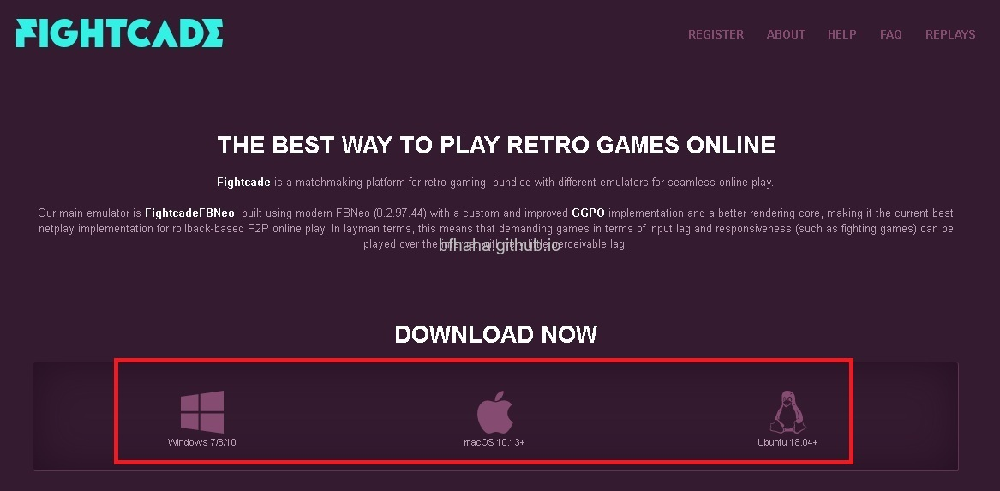
- 接著下載遊戲rom，這裡以拳皇98（kof98）為例，可以在這篇文章中提到的網址下載（放在Google Drive）。另外還需要neogeo檔案，下載網址也是在同樣的網頁中找到。kof98，neogeo。注意到，如果你以前有用過MAME或是Fightcade 1，這些模擬器使用的kof98及neogeo並不適用於Fightcade 2。
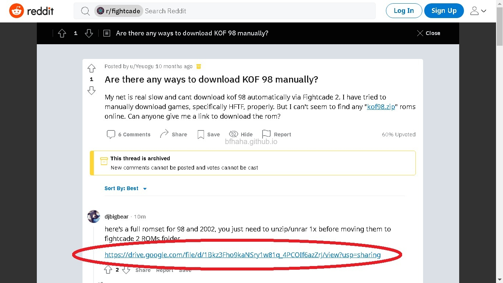
- 遊戲下載後為zip檔，也就是kof98.zip及neogeo.zip。放到C:\Users\bfhaha\Documents\Fightcade\emulator\fbneo\ROMs資料夾中。有幾點要注意。
- 不要解壓縮。
- Fightcade預設是安裝到C:\Users\bfhaha\Documents\Fightcade，其中bfhaha是我的使用者名稱，隨著你的電腦設定而不同。
- 不是放到C:\Users\bfhaha\Documents\Fightcade\ROMs資料夾中。
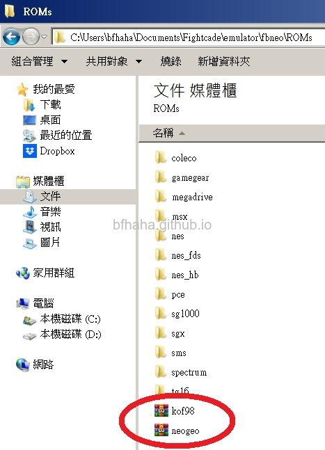
- 開啟桌面Fightcade的捷徑。預設來說，這個捷徑是開啟Fightcade 2。也就是說Fightcade有新舊兩個版本1跟2，現在大家漸漸地都使用新版本了，所以這裡不討論舊版本。

- 第一次連線進伺服器要先註冊（不用收email確認），然後輸入帳號密碼登入。
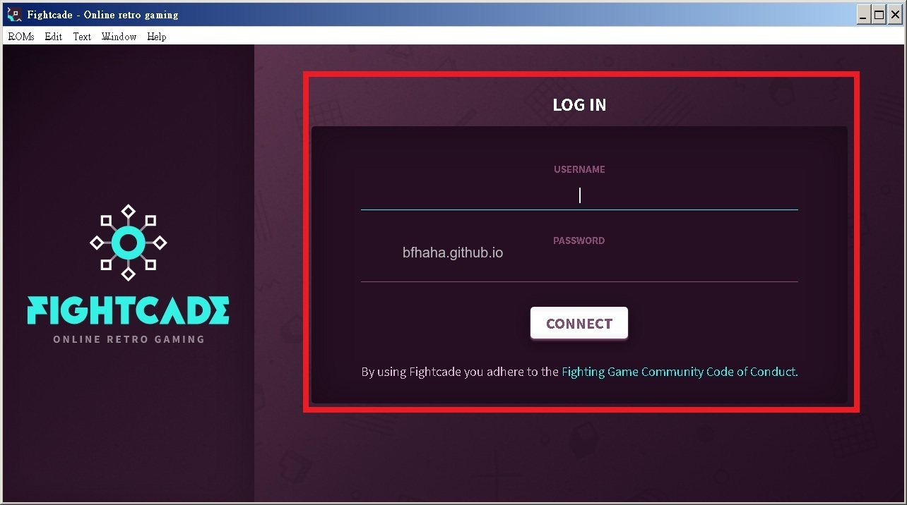
- 登入後進到程式的主畫面。
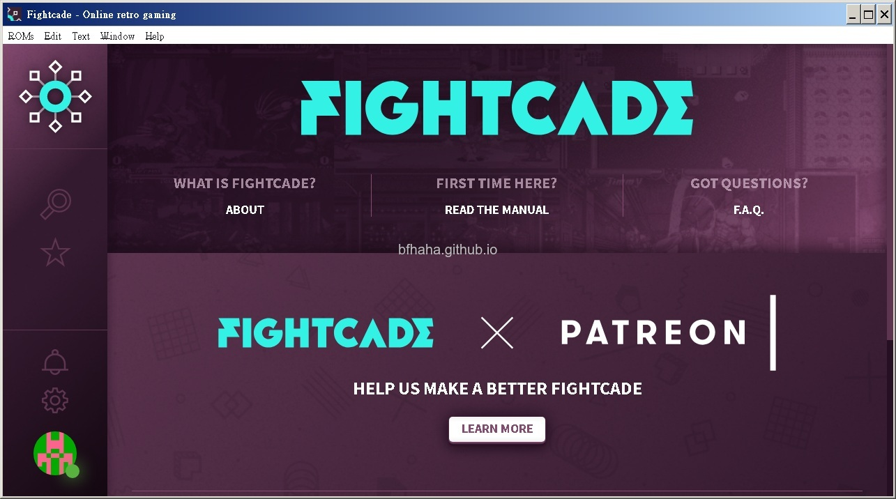
- 按下左邊的放大鏡，就可以看到目前有人在玩的遊戲列表，上面有顯示人數。
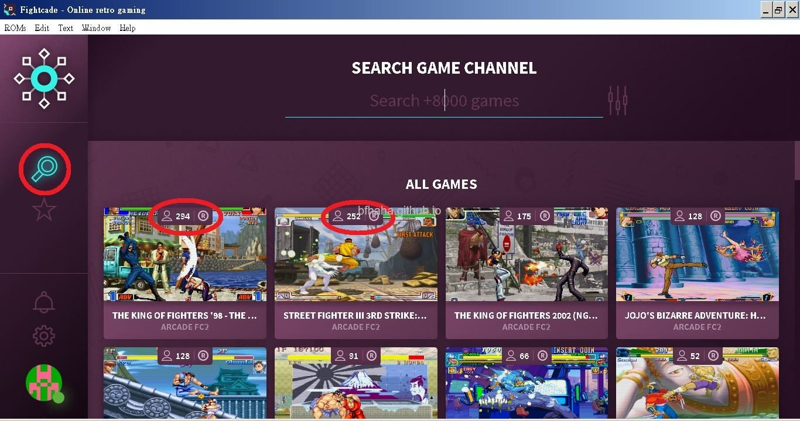
- 點選遊戲後，按下JOIN即可加入。
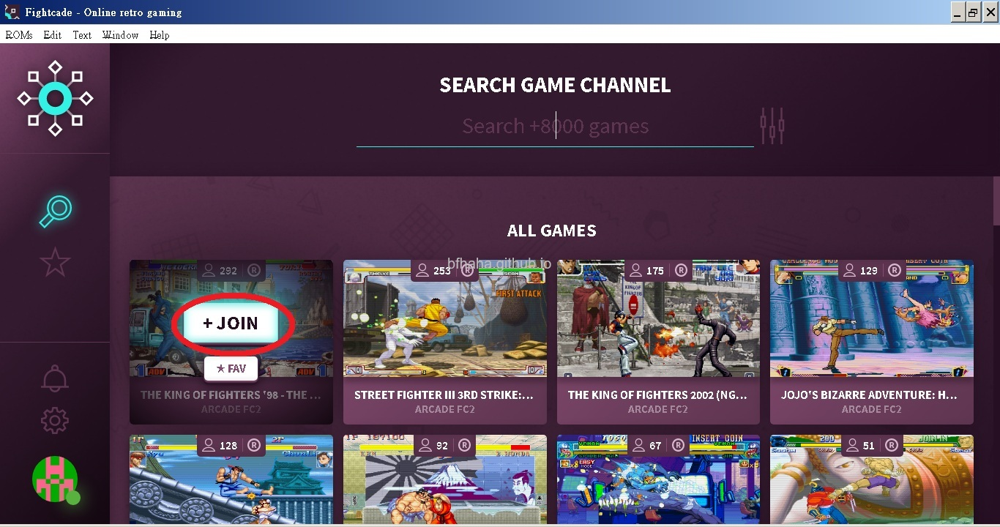
- 可以看到左邊出現拳皇98的選項了，點選後即可進入遊戲大廳。
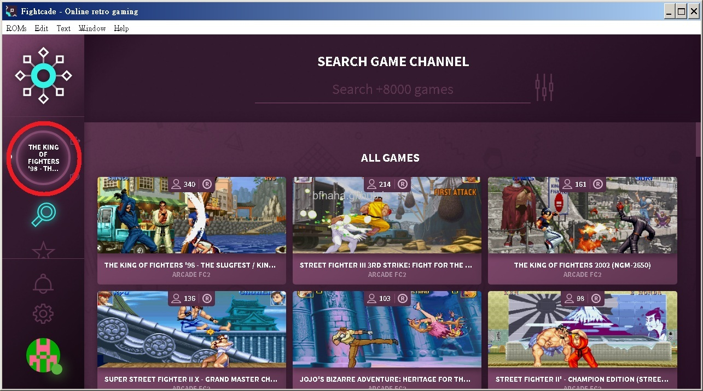
- 遊戲大廳的畫面。先來介紹一下。
- 中間是聊天室。
- 左邊是個人設定，在你的帳號圖示上按一下，可以選擇ONLINE或是AWAY，如果想先休息一下，不想接受其他玩家的邀請，可以選擇AWAY。
- 左邊的鈴鐺圖示可以看到其他玩家邀請你的訊息。這個功能蠻重要的，因為邀請訊息雖然會出現在中間聊天訊息中，但因為聊天室有時候會洗頻，所以可能會錯過。
- 右邊是玩家列表。
- 可以看到各個玩家的國家。
- 玩家名稱後面有個wifi訊號的圖示，表示連線品質。這蠻重要的，連線品質不好的話，就會出現無法完成必殺技，或是兩個人攻擊判定的出錯。
- 玩家後面的英文字母表示排位，最強是A，一直往後排，也有些人排位是問號。一開始似乎是從C開始排，輸的話再往後，贏的話往前。
- 點一下LOOKING TO PLAY，可以更換排序，把游標停在LOOKING TO PLAY字樣上就可以顯示目前是按照什麼排序的。可以按照排位排序（挑選比較適合自己的對手），可以按照網路訊號排序，可以按照名稱排序（可以用來找玩家）。
- 再往下拉有一區PLAYING，可以點進去看其他人對打。
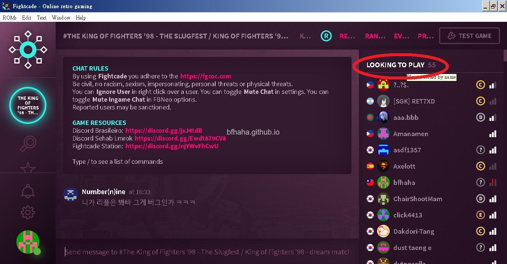
- 我們先設定一下手把。在大廳的右上角有個TEST GAME，點進去後即可進入單機模式，也可以測試一下自己的遊戲ROM可不可以正常運行。
- 如果遊戲rom放錯位置或是版本不同，會出現下面的錯誤訊息。要怎麼知道自己的遊戲rom版本是否符合，一個方法是將其解壓縮後，看看裡面是否有錯誤訊息中所說的這些檔案。如果沒有的話就是版本不符合。
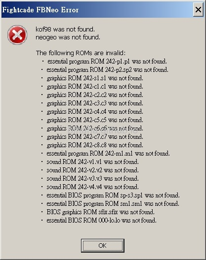
- 會開啟一個新視窗執行遊戲，在功能表列選擇Input，然後選擇Map game inputs。
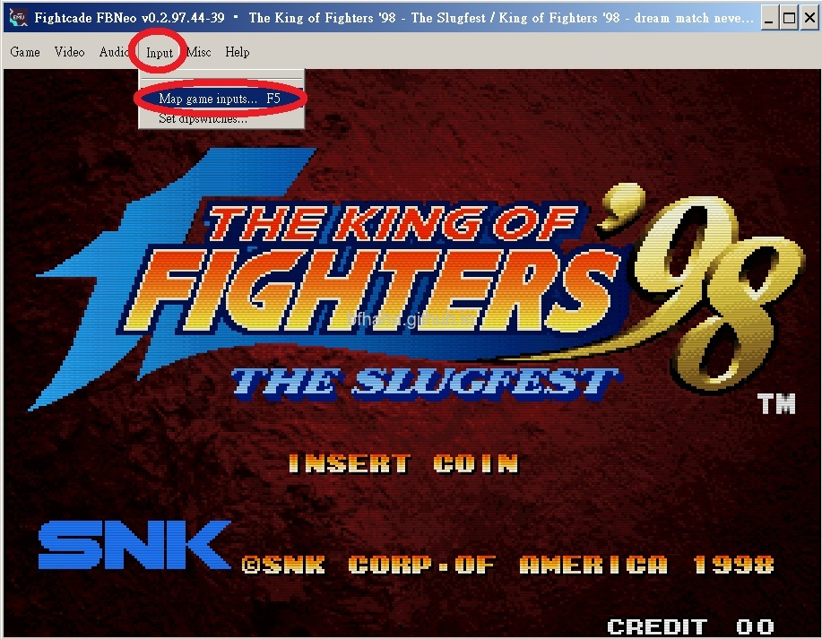
- 接著出現按鍵列表。
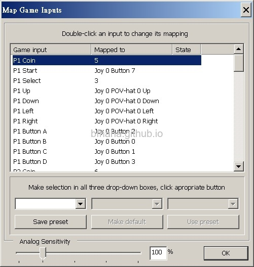
- 在要設定的按鍵上點兩下，然後按下搖桿上要設定的按鈕即可。
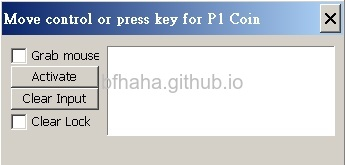
- 設定完後退出單機模式，並回到遊戲大廳。在想要挑戰的玩家名稱上點兩下，即可發出邀情。可以選擇打排位FT2, FT3, FT5, FT10, FT20，數字表示勝利必須贏的場次，例如FT3就是先贏3場的人獲勝，或是無排位UNRANKED或是取消CANCEL。打排位的不能中途斷線，會被處罰。
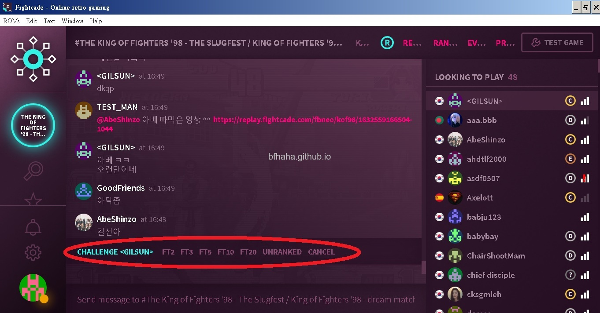
- 對方答應邀請後即會另開視窗開始對戰。第一次對戰會要你允許通過防火牆。
練習模式
大廳裡都是高手雲集，八神光用葵花就可以把我打爆了。下面說明怎麼開啟練習模式。
- 首先我們跟剛剛第11步一樣，進到[TEST GAME]。
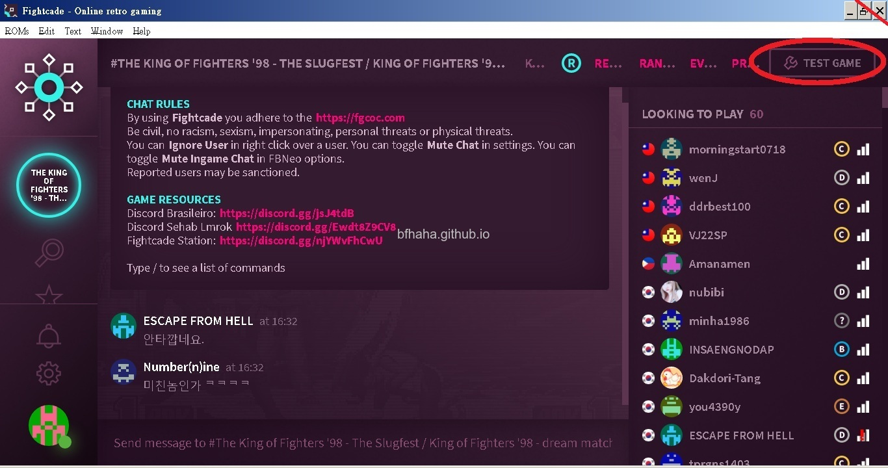
- 然後跟第13步設定搖桿按鍵的時候類似，不過是要選擇[Set dipswitches]。
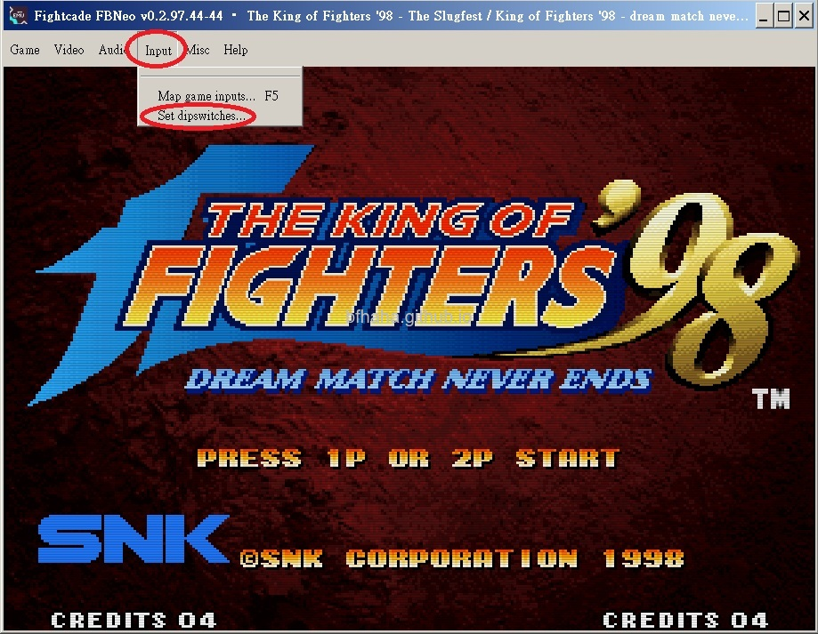
- 然後會進到設定畫面，我們要修改BIOS。先點選[BIOS]，然後按下下面的下拉選單，選擇[BIOS: AES Japan]。完成後按下OK，並按下鍵盤上的F3，表示Reset。
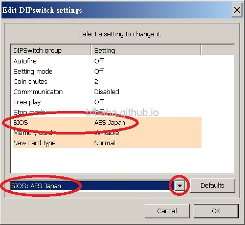
- 如果你按下F3並沒有Reset，那很有可能你在剛剛第14步的時候有把它設成其他按鍵。
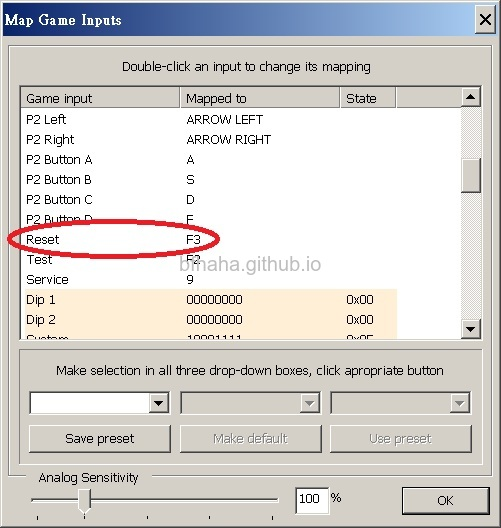
- 進到遊戲後，按下[Start]鍵。（一樣地，[Start]對應的按鍵要看你怎麼設定。）可以看到模式選單，前四個就是一般的模式，對NPC或是玩家對戰。我們選擇[PRACTICE]練習模式。
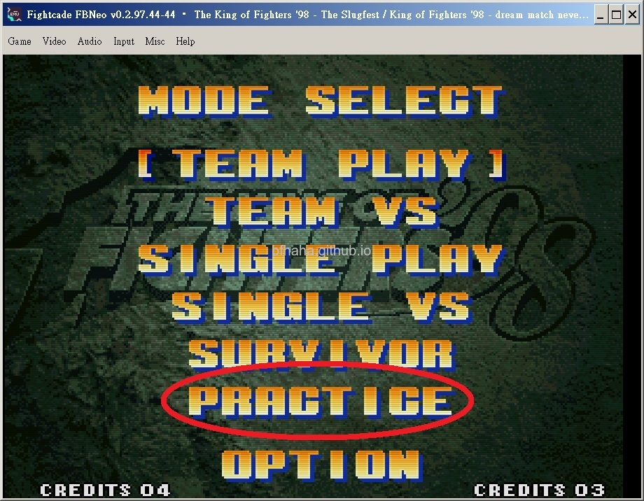
- 選完角色後會要設定練習的方式。可以選擇練習的對手是
- 站著（STAND）、
- 蹲下（CROUCH）、
- 跳躍（JUMP）。
也可以開關
- 讀秒（COUNTER）、
- 攻擊（ATTACK）、
- 防禦（GARD）。
在練習模式中，
- 對手損血後三秒會自動回復滿血，
- 對手就算沒血也不會死亡，
- 你就算被攻擊也不會損血，
- 防禦模式下，你攻擊對手的第一下不會防禦，這可以用來練習連招，
- 按下[Start]鍵，對手會向你移動，讓你可以換邊練習。
設定完後選擇第一個[START]（不是按下[Start]鍵）就可以進入遊戲，遊戲中按下[Select]可以回到這個畫面，也可以選擇[CHARACTER CHANGE]換角色。（一樣地，[Select]對應的按鍵要看你怎麼設定。）注意，要從這個選單回到遊戲，要再按一次[Select]，而不是選擇[EXIT]，選擇[EXIT]會回到模式選擇的畫面。
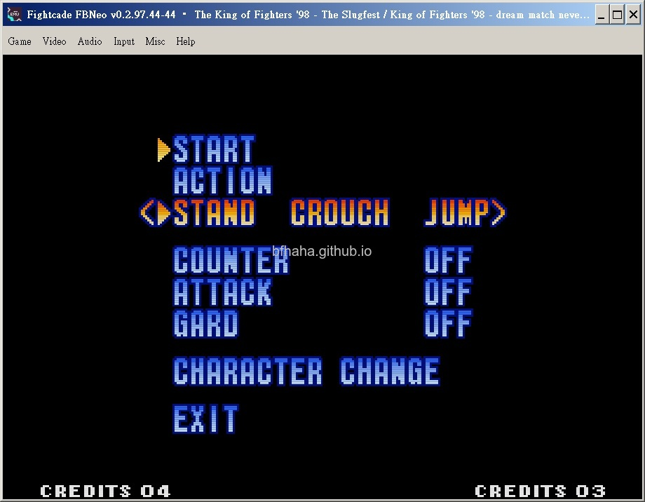
- 另外，我們也可以設定玩家對電腦或玩家對玩家的設定。在剛剛模式選擇的地方，選擇[OPTION]。
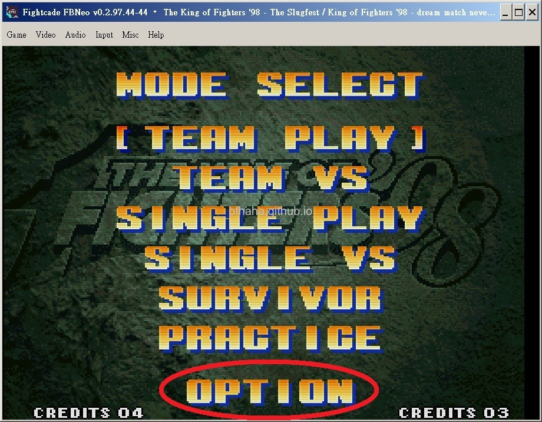
- 可以設定
- 電腦對手的強度（DIFFICULTY），
- 對戰時間（PLAY TIME），
- 可否選擇對戰場地（STAGE SELECT），這只有在玩家對戰的時候會起作用。
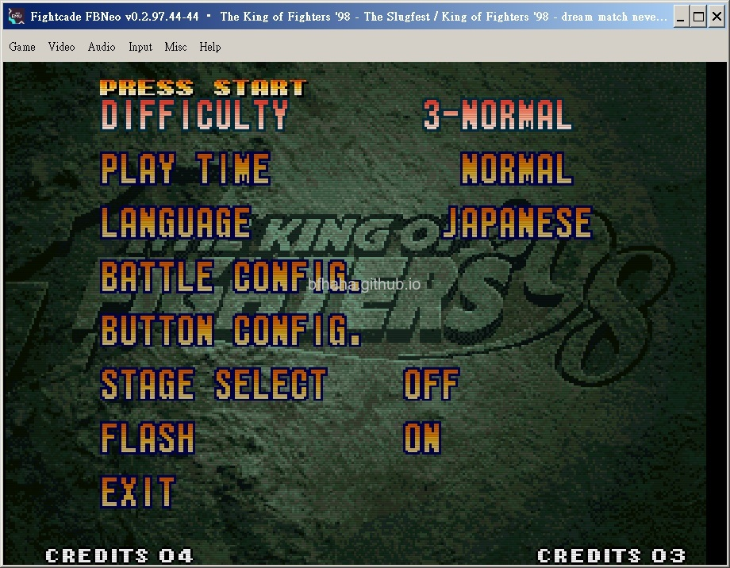
- 更進一步我們也可以選擇[BATTLE CONFIG.]，來設定玩家跟玩家之間的對戰。
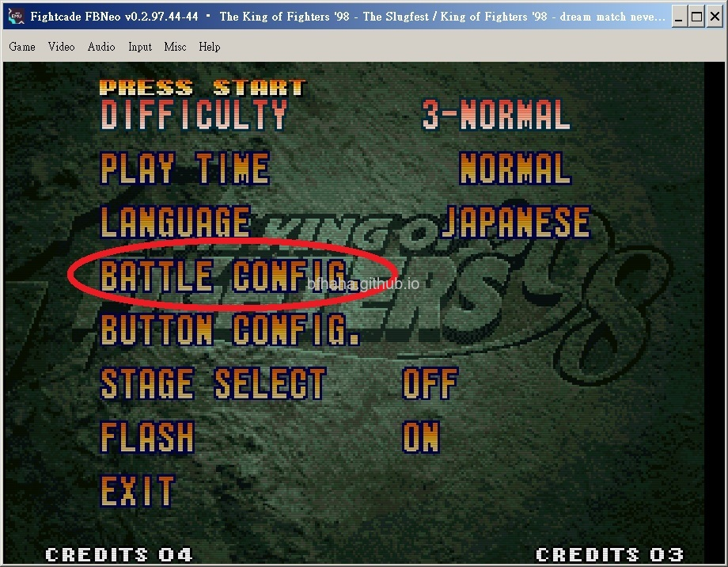
- 在這裡可以設定
- 攻擊力（LEVEL），
- 氣量條（POWER GAUGE）。
注意，在[DISP.CUT]裡面，只是顯示與不顯示，例如如果[LIFE]設定為[OFF]，則不會顯示血量，但還是會損血死亡。
- 顯示血量（LIFE），
- 顯示氣量條（POW），
- 顯示時間（TIME）。
其他
- 下一位角色是否繼承上一個角色的氣（ADVANTAGE），
- 同一位角色重複對戰幾回合（WINNING POINT）。
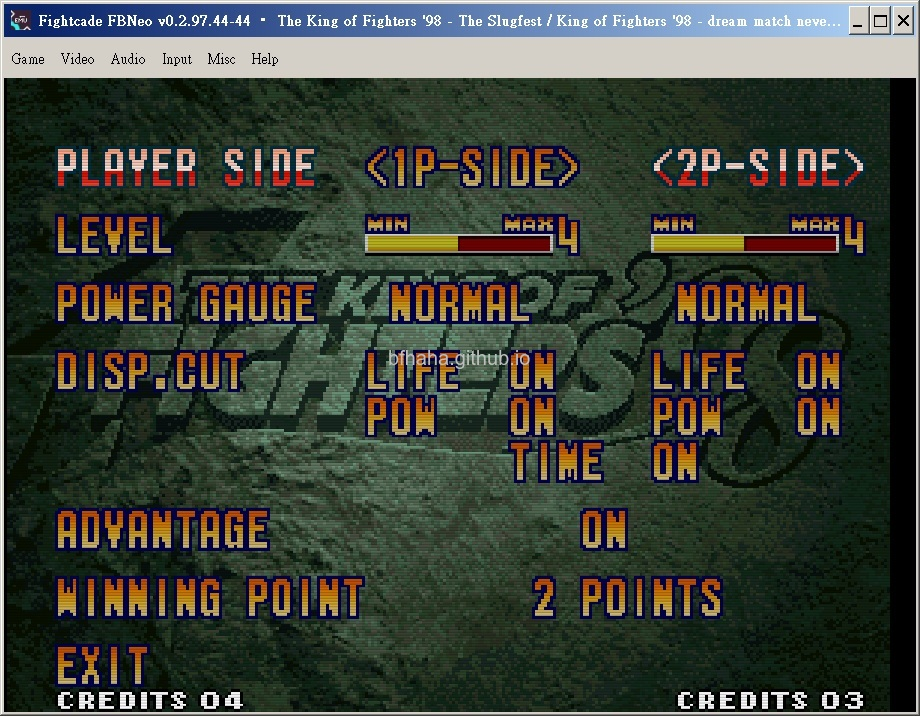
- 注意到練習完後要把BIOS改回來，否則似乎會影響跟其他玩家對戰時的連線順暢度。
其他
- 在遊戲中如果要對話的話，按下鍵盤的T鍵後，即可輸入文字訊息，顯示在左下角。

- 要選擇隱藏角色，就在對應的角色上按住[Start]鍵，部份角色在按住[Start]鍵後圖像會變化，例如七枷社、雪魯米、克里斯、路卡爾；部分則不會變化，但實際上是有的，例如草薙京。（隱藏版的草薙京↓↘→A會是地波。）
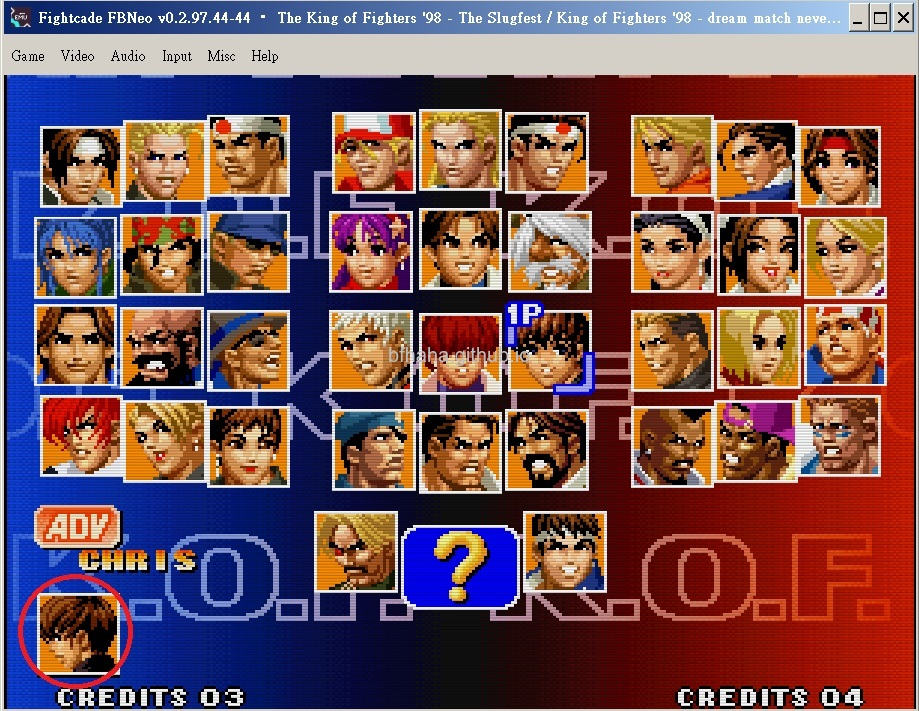
- 在決定角色出場順序時，按住[Start]可以看到角色之間的友好度，這決定了累積的氣條能否繼承給下一個角色。
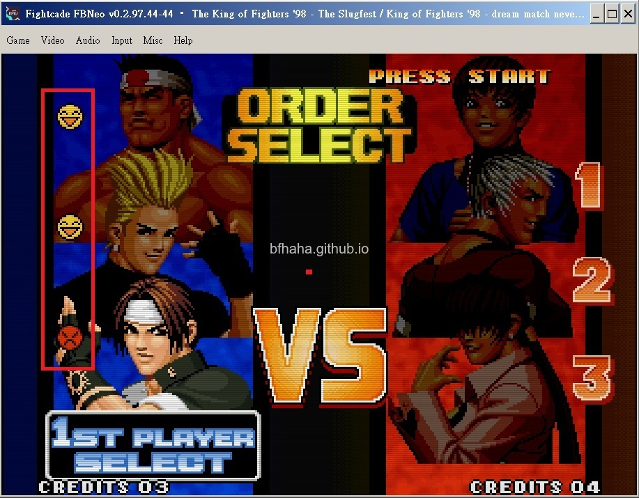
- 筆記一下幾隻常見角色的連招。角色招式表可以參考這個網站。
- 八神：跳[C或D]接[C]接[→+A]接[↓↙←A或C三次]葵花。跳C攻擊力比較高，但攻擊範圍較小，攻擊時間點不好抓。[→A]之後不能再接[A]，因為距離太遠。
- 草薙柴舟：跳[C或D]接[C]接[→+A]接[↓↙←A或C兩次或是↓↙←↙↓↘→A或C]。
- 隱藏克里斯：跳[C或D]接[C]接[→+A]接[↓↙←A或C或是↓↙←↙↓↘→A]。最後的大招一定要用[A]不能用[C]，否則會因為速度太慢被擋下來